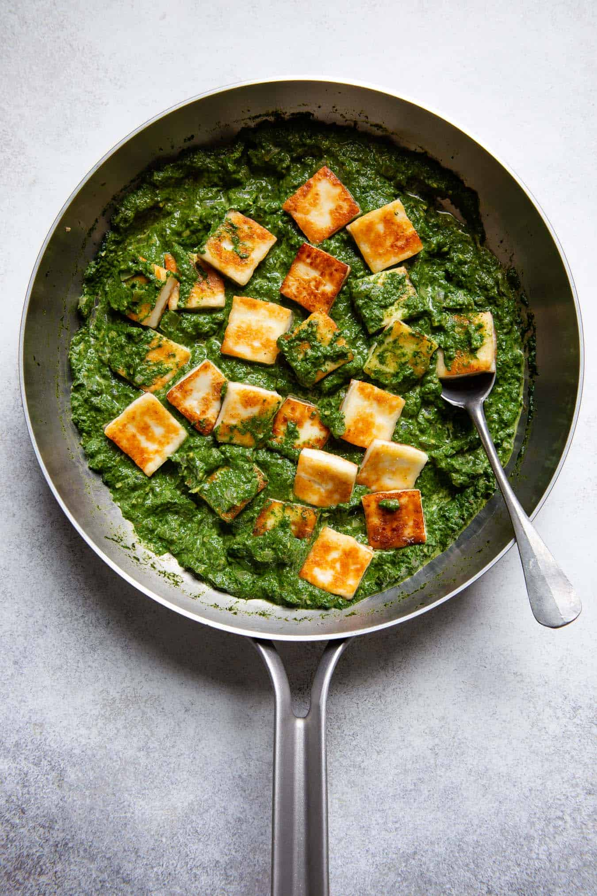

Palak Paneer

Description
Palak Paneer is one of the most popular Indian dish made with succulent
paneer cubes (Indian cottage cheese) in a smooth spinach sauce.
It is one of the most popular Indian curries around, and with good reason. This deliciously
creamy and vibrantly green dish is made with paneer in a mildly spiced
fresh spinach sauce. This is a delightful and easy to make vegetarian main you just
have to try!
Ingredients
- ⅓ cup ghee (clarified butter)
- 1 bulb garlic, peeled and minced
- 1/2 teaspoon toasted cumin seed
- 1 (6 ounce) can tomato paste
- 1 (3 inch) piece ginger, peeled and minced
- 2 teaspoons garam masala, divided
- 1 teaspoon salt
<1i>1 large onion, finely chopped
- 1 cup water, or as needed
- 1 (10 ounce) box frozen chopped spinach thawed and drained
- 1 pound paneer cut into 1/2 inch cubes
- i/4 cup chopped fresh cilantro
- 1 teaspoon garam masala
Steps
- Melt ghee in a saucepan over medium-low heat. Stir in garlic and
cumin seed; cook until the garlic softens, about 3 minutes. Add
tomato paste, ginger, 1 teaspoon garam masala, salt, onion, and
water. Increase heat to medium, and stir until the tomato paste
dissolves. Simmer slowly for 1 hour, adding water as needed to
maintain a sauce-like consistency.
- Stir in spinach and cook until hot, about 5 minutes. Add paneer,
and allow to cook an additional 5 minutes, or until hot. Pour into
a serving dish and sprinkle with cilantro and remaining 1 teaspoon
garam masala.
Nutrition Facts
Per Serving: 368 calories; protein 20.2g; carbohydrates
24g; fat 23.2g; cholesterol 60.8mg; sodium 1437.7mg.
Return to home